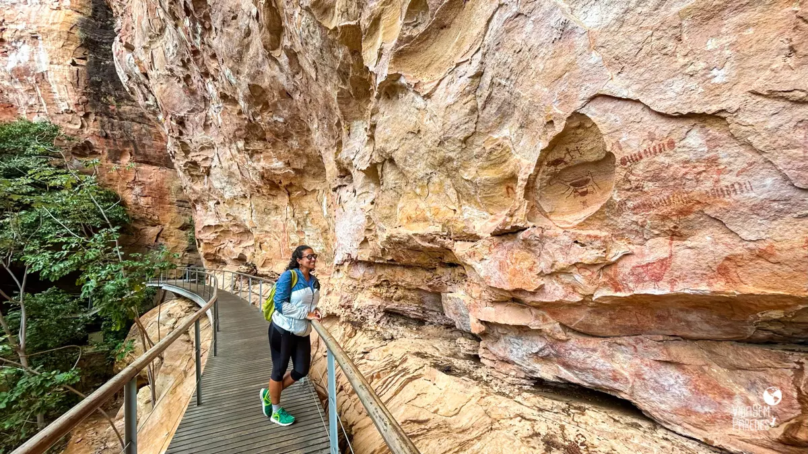
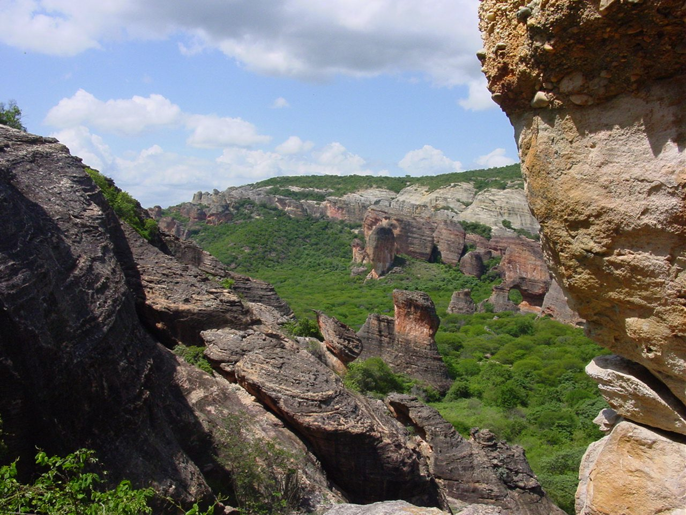
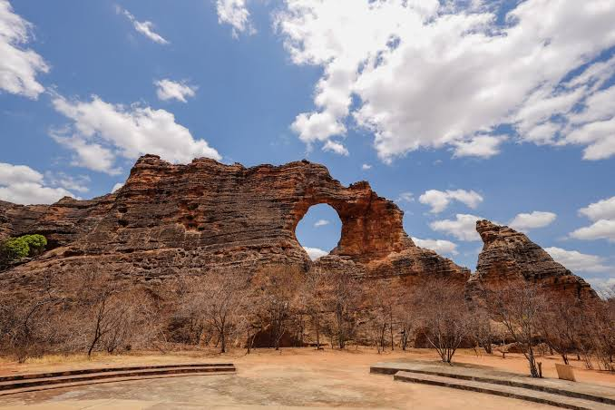

Guia completo
Pontos Turísticos
Veja todos os pontos turísticos cadastrados no site e escolha qual deseja conhecer.
Acessar páginaConheça paisagens, museus, trilhas e pontos turísticos de um dos lugares mais importantes do Piauí.
Ver pontos turísticos Planejar visitaEste site apresenta alguns dos principais atrativos da região, reunindo informações sobre natureza, cultura, história, museus, trilhas e paisagens.
Use os atalhos abaixo para acessar as páginas do guia e conhecer melhor cada ponto turístico.


Veja todos os pontos turísticos cadastrados no site e escolha qual deseja conhecer.
Acessar página
Conheça uma das áreas mais importantes da região, com paisagens naturais e registros arqueológicos.
Saiba mais
Veja mais detalhes sobre uma das formações rochosas mais conhecidas da Serra da Capivara.
Saiba mais
Conheça um espaço dedicado à ciência, à natureza e à história da vida no planeta.
Saiba maisA região possui pinturas rupestres e sítios arqueológicos de grande importância.
As paisagens da Caatinga, as formações rochosas e os mirantes tornam a visita marcante.
Museus e espaços de visitação ajudam a contar a história natural e humana da região.
Acesse a página de contato para enviar uma mensagem sobre a Serra da Capivara.
Entrar em contato